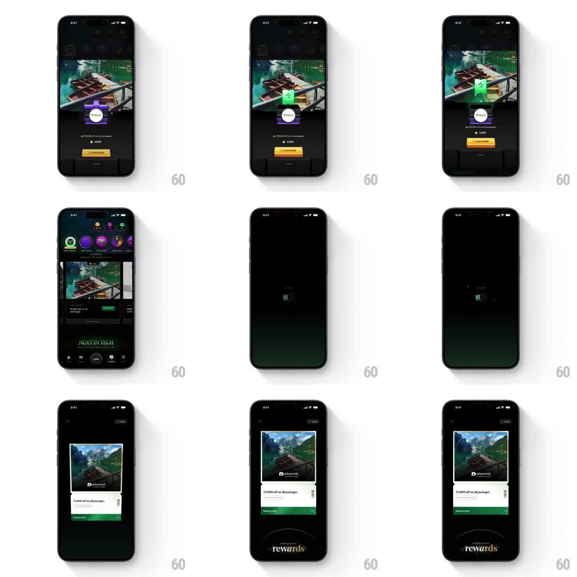

Media
Frame-by-frame

Rebuild this interaction 1:1: CRED's voucher claim - tapping CLAIM NOW punches a green stamp onto the voucher, the voucher then miniaturizes and flies to the bottom of the screen, and the claimed rewards card rises in its place.

Rebuild this interaction 1:1: CRED's voucher claim - tapping CLAIM NOW punches a green stamp onto the voucher, the voucher then miniaturizes and flies to the bottom of the screen, and the claimed rewards card rises in its place. ## Integration Integration: stack-agnostic spec - springs given as stiffness/damping, timed motions as duration + curve; map every value to your framework and animation library of choice. ## Scene CRED voucher detail, dark: a big photo voucher (houseboats, "get Rs 1,000 off on all packages", Rs 300 off line) with a purple stamp pad above and an orange CLAIM NOW button below. Claimed: a "rewards" card (same photo, "Rs 1,000 off on all packages", Redeem Now) standing on the rewards stage. ## Motion spec Pattern: stamp-punch claim, then collect-and-file. - Tap CLAIM NOW: the button squashes (scaleY 0.92, 100ms), a green stamp slams down onto the voucher (translateY -60 -> 0, 200ms ease-in) with a paper shake (rotateZ +/-1 degree, 150ms) and an ink ring spreading from the stamp (scale 0.8 -> 1.4, fade, 300ms). - The voucher then shrinks and flies to the bottom-center (scale 1 -> 0.25, translateY to the dock, 400ms, ease-in) as the screen dims - filed away. - After a 200ms dark beat, the claimed rewards card rises from the bottom (translateY 120 -> 0, spring ~280/15) with the "rewards" wordmark fading in under it (250ms). - The card settles with a soft shadow bloom and holds. ## Calibration - The stamp is a physical punch - fast in, tiny shake, ink bloom. No gentle fades on the stamp itself. - The fly-away path is a straight shrink to the dock, not an arc - filing, not celebrating. ## Reduced motion Stamp fades on (200ms); voucher crossfades to the rewards card (300ms). ## Don't miss - The photo on the voucher and the claimed card is identical - the shared image carries the continuity. - CLAIM NOW is gone after the punch; the button never comes back in that session.